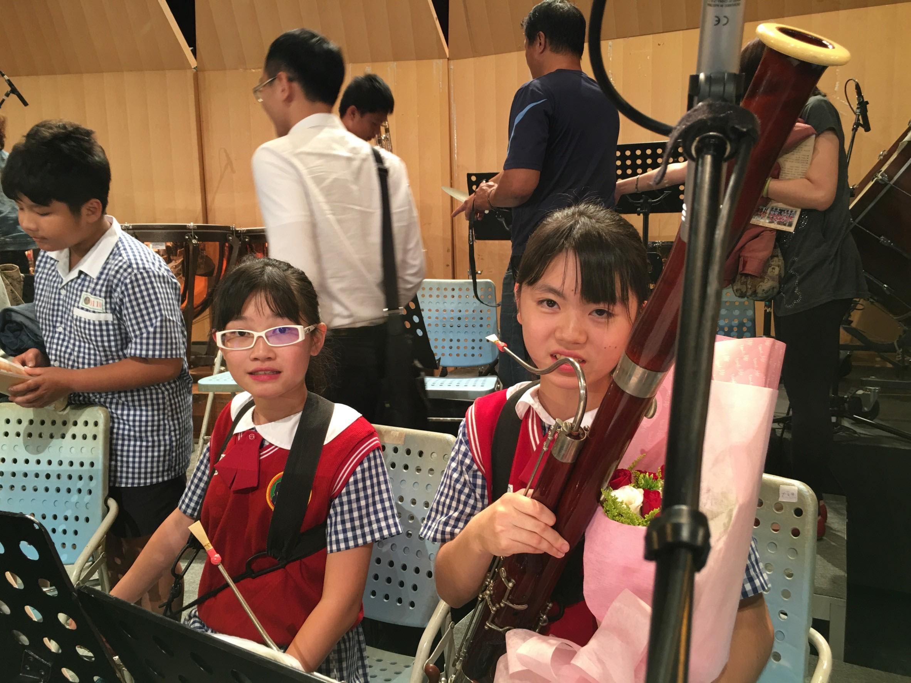
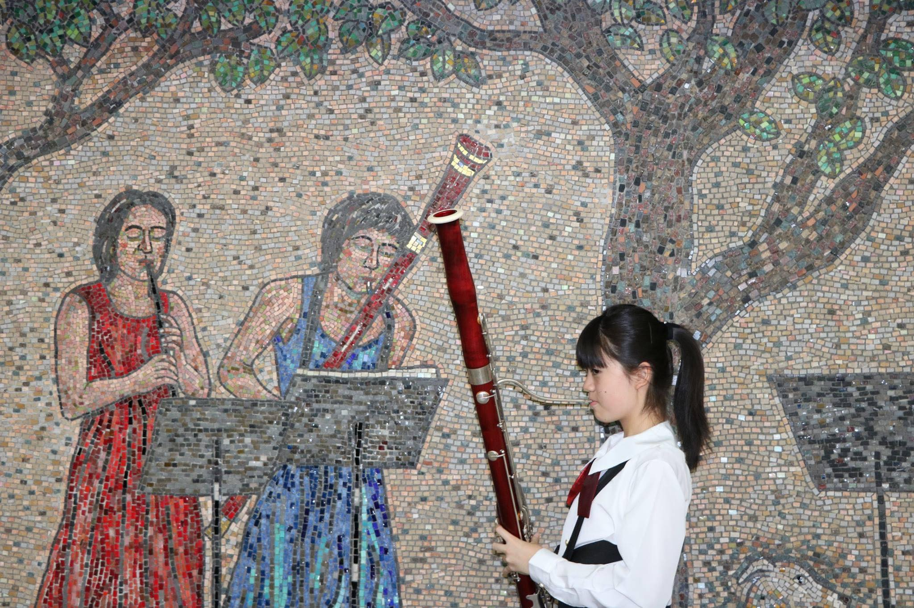
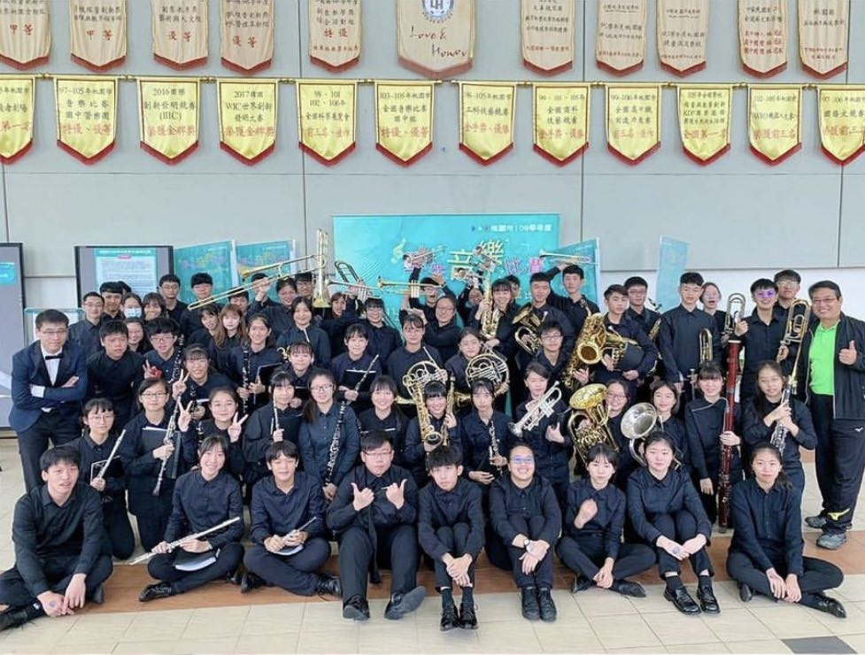
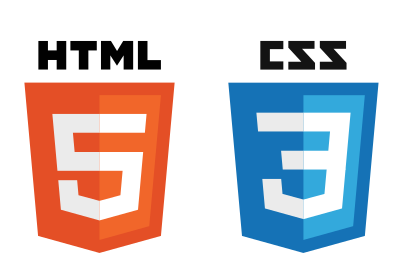
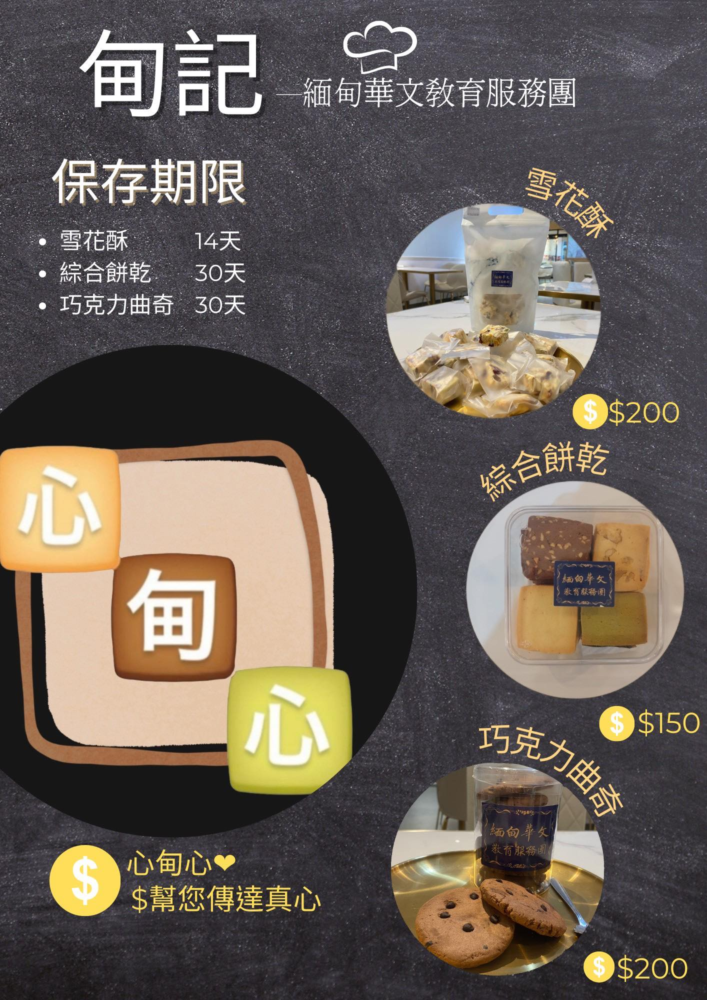

個人資料
- 姓名:卓郁倢
- 生日:2004/03/06
- 系級:資管二甲
- 興趣:聽音樂、追劇
相信自己!你比想像中強大!
聯絡資訊
IG LINE MAIL

國小-文化國小
參加管弦員團
教育局長獎

國中-平鎮國中
就讀藝術才能班
管樂合奏項目特優
國中會考5A

高中-中大壢中
參加學校管樂社
擔任學生指揮
大學-中原大學
就讀大二
- - - 我的技能 - - -
程式設計能力
Phython
 |
時間:大一上學期
能力：學習一門程式語言，以利用Phython做出成品。
|
Java
 |
時間:大一下學期
能力：學習一門程式語言，以利用Java做出成品。
|
HTML/CSS
 |
時間:大二上學期
能力：學習一門程式語言，以利用HTML/CSS做出網頁設計。
|
企業概論專案
 |
專案時間：大一上學期
專案內容：製作企劃和緬甸基金會合作
學到的能力：學會構思網路文案、與顧客溝通、製作企劃書
我的心得：在大一的時候，我們上了一門企業概論的課程，我也在這堂課學到了很多。我在此次的計劃小組裡面主要是擔任人力資源長的部分，而我主要的工作是在IG的行銷經營上，我覺得是一個很特別的經歷，也透過這個工作，學會站在消費者的角度思考，構想文案、排版出有吸引力的配圖，也要學會回覆訊息時的語氣及態度，讓我有了擔任小編的經驗，也使我對行銷運作的部分更加熟悉。
|
管理學專案
|
專案時間：大一下學期
專案內容：製作企劃並販賣拉拉山水蜜桃
學到的能力：與廠商和顧客間的溝通、行銷產品
我的心得：我們的管理學實作了社會服務的專案，在這次的企劃中，我們要幫忙行銷拉拉山的水蜜桃，因為農民們不太會行銷，因此，我幫忙他們發傳單、想文案、也幫忙農民們將產品帶到山下販賣，增加消費者的購買率，我也從中學到了行銷的一些手法，也瞭解了在偏遠地區的農民們，可能會因為語言的問題而使得產品比較難被消費者看見，因此我覺得我們的活動很有意義，也幫助農民行銷，是個很棒的專案活動。
|
|